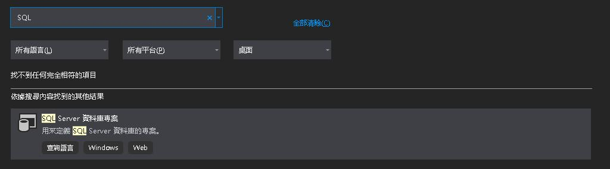
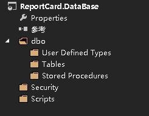
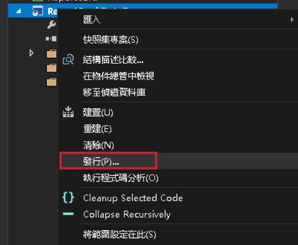
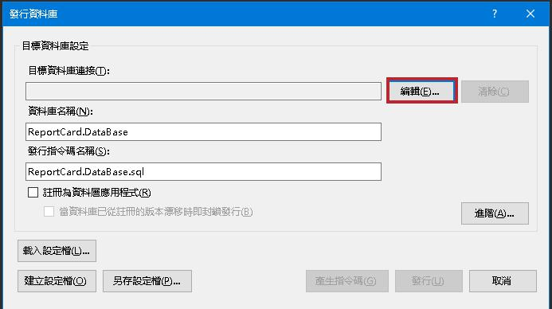
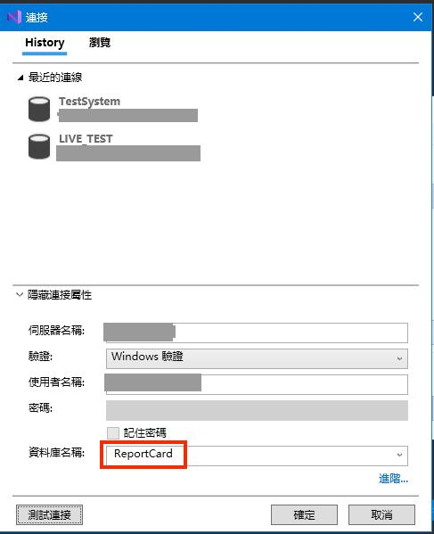

SQL專案用途
- 有利於版本控制
- 圖形化設定表結構IDE協助產出SQL語法
- 快速發行同步本地資料庫
- 腳本控制資料庫初始預設資料
- IntelliSense減少人為輸入錯誤
VS創建SQL專案步驟
1. 創建專案選擇SQL範本

2. 架構配置
- dbo - database相關配置
- Stored Procedures - SP相關配置
- Tables - 表相關配置
- User Defined Types - UDT相關配置
- Scripts - 發行時執行腳本
- Security - 安全性身分相關配置

3. 發行SQL設定(需先確認庫裡有DataBase存在)


